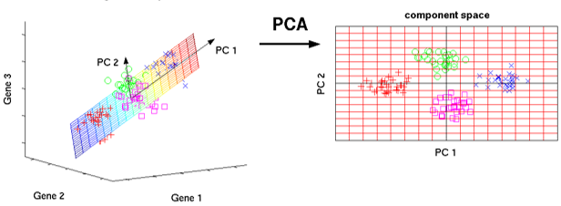

Спростити методи оцінки характеристик процесів , які описуються великими обсягами даних, за рахунок зменшення розмірності параметрів, забезпечивши мінімальні втрати інформації.
Суть методу полягає в заміні корелюючих параметрів некорелюючими факторами.
Іншою важливою характеристикою методу є можливість обмежитися найбільш інформативними головними компонентами і виключити інші з аналізу, що спрощує інтерпретацію результатів.
